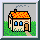

| " BORDER=0 height=14 width=15>Contents |
| " BORDER=0 height=14 width=15>Synopsis |
| " BORDER=0 height=14 width=15>Description |
Support for some of these formats require additional programs or libraries. README tells where to find this software.
Note, a format delineated with + means that if more than one image is specified, it is composited into a single multi-image file. Use +adjoin if you want a single image produced for each frame.
Raw images are expected to have one byte per pixel unless ImageMagick is compiled in 16-bit mode. Here, the raw data is expected to be stored two bytes per pixel in most-significant-byte-first order.
| " BORDER=0 height=14 width=15>Examples |
To convert a raw Gray image with a 128 byte header to a portable graymap, use:
To convert a Photo CD image to a TIFF image, use:
| " BORDER=0 height=14 width=15>Options |
| " BORDER=0 height=14 width=15>-adjoin |
By default, all images of an image sequence are stored in the same file. However, some formats (e.g. JPEG) do not support more than one image and are saved to separate files. Use +adjoin to force this behavior.
| " BORDER=0 height=14 width=15>-antialias |
| " BORDER=0 height=14 width=15>-append |
All the input images must have the same width or height. Images of the same width are stacked top-to-bottom. Images of the same height are stacked left-to-right. Use +append to stack rectangular images left-to-right.
| " BORDER=0 height=14 width=15>-average |
| " BORDER=0 height=14 width=15>-background color |
| " BORDER=0 height=14 width=15>-blur <radius>x<sigma> |
| " BORDER=0 height=14 width=15>-border <width>x<height> |
| " BORDER=0 height=14 width=15>-bordercolor color |
| " BORDER=0 height=14 width=15>-box color |
| " BORDER=0 height=14 width=15>-cache threshold |
Image pixels are stored in memory until 80 megabytes of memory have been consumed. Subsequent pixel operations are cached on disk. Operations to memory are significantly faster but if your computer does not have a sufficient amount of free memory you may want to adjust this threshold value.
| " BORDER=0 height=14 width=15>-channel type |
| " BORDER=0 height=14 width=15>-charcoal factor |
| " BORDER=0 height=14 width=15>-coalesce |
| " BORDER=0 height=14 width=15>-colorize value |
Specify the amount of colorization as a percentage. You can apply separate colorization values to the red, green, and blue channels of the image with a colorization value list delineated with slashes (e.g. 0/0/50).
| " BORDER=0 height=14 width=15>-colors value |
The actual number of colors in the image may be less than your request, but never more. Note, this is a color reduction option. Images with less unique colors than specified with this option will have any duplicate or unused colors removed. Refer to quantize for more details.
Note, options -dither, -colorspace, and -treedepth
affect the color reduction algorithm.
| " BORDER=0 height=14 width=15>-colorspace value |
Color reduction, by default, takes place in the RGB color space. Empirical evidence suggests that distances in color spaces such as YUV or YIQ correspond to perceptual color differences more closely than do distances in RGB space. These color spaces may give better results when color reducing an image. Refer to quantize for more details.
The Transparent color space behaves uniquely in that it preserves the matte channel of the image if it exists.
The -colors or -monochrome option is required for this option to take effect.
| " BORDER=0 height=14 width=15>-comment string |
Use this option to assign a specific comment to the image. You can include the image filename, type, width, height, or other image attribute by embedding special format characters:
%b file size %c comment %d directory %e filename extention %f filename %h height %i input filename %k number of unique colors %l label %m magick %n number of scenes %o output filename %p page number %q quantum depth %s scene number %t top of filename %u unique temporary filename %w width %x x resolution %y y resolution \\n newline \\r carriage returnFor example,
-comment "%m:%f %wx%h"
| " BORDER=0 height=14 width=15>-compress type |
Specify +compress to store the binary image in an uncompressed format. The default is the compression type of the specified image file.
| " BORDER=0 height=14 width=15>-contrast |
This option enhances the intensity differences between the lighter and darker elements of the image. Use -contrast to enhance the image or +contrast to reduce the image contrast.
| " BORDER=0 height=14 width=15>-crop <width>x<height>{+-}<x offset>{+-}<y offset>{%} |
Use cropping to apply image processing options to, or display, a particular area of an image.
Omit the x and y offset to generate one or more subimages of a uniform size.
Use cropping to crop a particular area of an image. Use -crop 0x0 to trim edges that are the background color. Add an x and y offset to leave a portion of the trimmed edges with the image.
| " BORDER=0 height=14 width=15>-cycle amount |
Amount defines the number of positions each colormap entry is shifted.
| " BORDER=0 height=14 width=15>-deconstruct |
| " BORDER=0 height=14 width=15>-delay <1/100ths of a second> |
This option is useful for regulating the animation of GIF images within Netscape.. 1/100ths of a second must expire before the display of the next image. The default is no delay between each showing of the image sequence. The maximum delay is 65535.
You can specify a delay range (e.g. -delay 10-500) which sets the minimum and maximum delay.
| " BORDER=0 height=14 width=15>-density <width>x<height> |
This option specifies an image density when decoding a PostScript or Portable Document page. The default is 72 dots per inch in the horizontal and vertical direction. This option is used in concert with -page.
| " BORDER=0 height=14 width=15>-depth value |
| " BORDER=0 height=14 width=15>-despeckle |
| " BORDER=0 height=14 width=15>-display host:display[.screen] |
| " BORDER=0 height=14 width=15>-dispose method |
Here are the valid methods:
0 No disposal specified. 1 Do not dispose between frames. 2 Overwrite frame with background color from header. 3 Overwrite with previous frame.
| " BORDER=0 height=14 width=15>-dither |
The basic strategy of dithering is to trade intensity resolution for spatial resolution by averaging the intensities of several neighboring pixels. Images which suffer from severe contouring when reducing colors can be improved with this option.
The -colors or -monochrome option is required for this option to take effect.
Use +dither to render Postscript without text or graphic aliasing.
| " BORDER=0 height=14 width=15>-draw string |
Use this option to annotate an image with one or more graphic primitives. The primitives include
point line rectangle roundRectangle arc ellipse circle polyline polygon bezier path color matte text image
-draw 'circle 100,100 150,150'
Use color to change the color of a pixel. Follow the pixel coordinate with a method:
point replace floodfill filltoborder reset
Use matte to the change the pixel matte value to transparent. Follow the pixel coordinate with a method (see the color primitive for a description of methods). The point method changes the matte value of the target pixel. The replace method changes the matte value of any pixel that matches the color of the target pixel. Floodfill changes the matte value of any pixel that matches the color of the target pixel and is a neighbor, whereas filltoborder changes the matte value of any neighbor pixel that is not the border color (-bordercolor). Finally reset changes the matte value of all pixels.
Use text to annotate an image with text. Follow the text coordinates with a string. If the string has embedded spaces, enclose it in double quotes. Optionally you can include the image filename, type, width, height, or other image attribute by embedding special format character. See -comment for details.
For example,
-draw 'text 100,100 "%m:%f %wx%h"'annotates the image with MIFF:bird.miff 512x480 for an image titled bird.miff and whose width is 512 and height is 480.
Use image to composite an image with another image. Follow the image coordinates with the composite operator, image size, and filename:
-draw 'image Over 100,100 225,225 image.jpg'
If the first character of string is @, the text is read from a file titled by the remaining characters in the string.
You can set the primitive color, font color, and font bounding box color with -fill, -font, and -box respectively. Options are processed in command line order so be sure to use -fillbefore the -draw option.
| " BORDER=0 height=14 width=15>-edge order |
| " BORDER=0 height=14 width=15>-enhance |
| " BORDER=0 height=14 width=15>-equalize |
| " BORDER=0 height=14 width=15>-fill color |
| " BORDER=0 height=14 width=15>-filter type |
Use this option to affect the resizing operation of an image (see -geometry). Choose from these filters:
Point Box Triangle Hermite Hanning Hamming Blackman Gaussian Quadratic Cubic Catrom Mitchell Lanczos Bessel Sinc
| " BORDER=0 height=14 width=15>-flatten |
| " BORDER=0 height=14 width=15>-flip |
| " BORDER=0 height=14 width=15>-flop |
| " BORDER=0 height=14 width=15>-font name |
You can tag a font to specify whether it is a Postscript, Truetype, or X11 font. For example, Arial.ttf is a Truetype font, ps:helvetica is Postscript, and x:fixed is X11.
| " BORDER=0 height=14 width=15>-frame <width>x<height+<outer bevel width>+<inner bevel width |
The color of the border is specified with the -mattecolor command line option.
| " BORDER=0 height=14 width=15>-fuzz distance |
A number of algorithms search for a target color. By default the color must be exact. Use this option to match colors that are close to the target color in RGB space. For example, if you want to automatically trim the edges of an image with -crop 0x0 but the image was scanned. The target background color may differ by a small amount. This option can account for these differences.
| " BORDER=0 height=14 width=15>-gamma value |
The same color image displayed on two different workstations may look different due to differences in the display monitor. Use gamma correction to adjust for this color difference. Reasonable values extend from 0.8 to 2.3.
Use +gamma to set the image gamma level without actually adjusting the image pixels. This option is useful if the image is of a known gamma but not set as an image attribute (e.g. PNG images).
| " BORDER=0 height=14 width=15>-gaussian <radius>x<sigma> |
| " BORDER=0 height=14 width=15>-geometry <width>x<height>{+-}<x offset>{+-}<y offset>{%}{@}{!}{<}{>} |
By default, the width and height are maximum values. That is, the image is expanded or contracted to fit the width and height value while maintaining the aspect ratio of the image. Append an exclamation point to the geometry to force the image size to exactly the size you specify. For example, if you specify 640x480! the image width is set to 640 pixels and height to 480. If only one factor is specified, both the width and height assume the value.
To specify a percentage width or height instead, append %. The image size is multiplied by the width and height percentages to obtain the final image dimensions. To increase the size of an image, use a value greater than 100 (e.g. 125%). To decrease an image's size, use a percentage less than 100.
Use > to change the dimensions of the image only if its size exceeds the geometry specification. < resizes the image only if its dimensions is less than the geometry specification. For example, if you specify '640x480>' and the image size is 512x512, the image size does not change. However, if the image is 1024x1024, it is resized to 640x480.
Use < to change the dimensions of the image only if its size exceeds the geometry specification. > resizes the image only if its dimensions is less than the geometry specification. For example, if you specify 640x480> and the image size is 512x512, the image size does not change. However, if the image is 1024x1024, it is resized to 640x480.
There are 72 pixels per inch in PostScript coordinates.
| " BORDER=0 height=14 width=15>-gravity type |
The direction you choose specifies where to position the text when annotating the image. For example Center gravity forces the text to be centered within the image. By default, the image gravity is NorthWest.
| " BORDER=0 height=14 width=15>-implode factor |
| " BORDER=0 height=14 width=15>-intent type |
Use this option to affect the the color management operation of an image (see -profile). Choose from these intents:
Absolute Perceptual Relative Saturation
| " BORDER=0 height=14 width=15>-interlace type |
This option is used to specify the type of interlacing scheme for raw image formats such as RGB or YUV. None means do not interlace (RGBRGBRGBRGBRGBRGB...), Line uses scanline interlacing (RRR...GGG...BBB...RRR...GGG...BBB...), and Plane uses plane interlacing (RRRRRR...GGGGGG...BBBBBB...). Partition is like plane except the different planes are saved to individual files (e.g. image.R, image.G, and image.B).
Use Line, or Plane to create an interlaced GIF or progressive JPEG image.
| " BORDER=0 height=14 width=15>-label name |
Use this option to assign a specific label to the image. Optionally you can include the image filename, type, width, height, or other image attribute by embedding special format character. See -comment for details.
-label "%m:%f %wx%h"
| " BORDER=0 height=14 width=15>-list type |
| " BORDER=0 height=14 width=15>-loop iterations |
| " BORDER=0 height=14 width=15>-map filename |
By default, color reduction chooses an optimal set of colors that best represent the original image. Alternatively, you can choose a particular set of colors from an image file with this option. Use +map to reduce all images provided on the command line to a single optimal set of colors that best represent all the images.
| " BORDER=0 height=14 width=15>-matte |
| " BORDER=0 height=14 width=15>-modulate value |
Specify the percent change in brightness, the color saturation, and the hue separated by commas. For example, to increase the color brightness by 20% and decrease the color saturation by 10% and leave the hue unchanged, use: -modulate 120,90.
| " BORDER=0 height=14 width=15>-median order |
| " BORDER=0 height=14 width=15>-monochrome |
| " BORDER=0 height=14 width=15>-morph frames |
Both the image pixels and size are linearly interpolated to give the appearance of a meta-morphosis from one image to the next.
| " BORDER=0 height=14 width=15>-mosaic |
| " BORDER=0 height=14 width=15>-negate |
The red, green, and blue intensities of an image are negated. Use +negate to only negate the grayscale pixels of the image.
| " BORDER=0 height=14 width=15>-noise value |
The principal function of noise peak elimination filter is to smooth the objects within an image without losing edge information and without creating undesired structures. The central idea of the algorithm is to replace a pixel with its next neighbor in value within a pixel window, if this pixel has been found to be noise. A pixel is defined as noise if and only if this pixel is a maximum or minimum within the pixel window.
Use \fIorder\fP to specify the width of the neighborhood.
Use +noise followed by a noise type to add noise to an image. Choose from these noise types:
Uniform Gaussian Multiplicative Impulse Laplacian Poisson
| " BORDER=0 height=14 width=15>-normalize |
This is a contrast enhancement technique.
| " BORDER=0 height=14 width=15>-opaque color |
| " BORDER=0 height=14 width=15>-page <width>x<height>{+-}<x offset>{+-}<y offset>{%}{!}{<}{>} |
Use this option to specify the dimensions of the PostScript page in dots per inch or a TEXT page in pixels. The choices for a Postscript page are:
11x17 792 1224 Ledger 1224 792 Legal 612 1008 Letter 612 792 LetterSmall 612 792 ArchE 2592 3456 ArchD 1728 2592 ArchC 1296 1728 ArchB 864 1296 ArchA 648 864 A0 2380 3368 A1 1684 2380 A2 1190 1684 A3 842 1190 A4 595 842 A4Small 595 842 A5 421 595 A6 297 421 A7 210 297 A8 148 210 A9 105 148 A10 74 105 B0 2836 4008 B1 2004 2836 B2 1418 2004 B3 1002 1418 B4 709 1002 B5 501 709 C0 2600 3677 C1 1837 2600 C2 1298 1837 C3 918 1298 C4 649 918 C5 459 649 C6 323 459 Flsa 612 936 Flse 612 936 HalfLetter 396 612
To position a GIF image, use -page{+-}<x offset>{+-}<y offset> (e.g. -page "+1"00+200).
For a Postscript page, the image is sized as in -geometry and positioned relative to the lower left hand corner of the page by {+-}<xoffset>{+-}<y offset>. Use -page 612x792>, for example, to center the image within the page. If the image size exceeds the Postscript page, it is reduced to fit the page.
The default page dimensions for a TEXT image is 612x792.
This option is used in concert with -density.
| " BORDER=0 height=14 width=15>-paint radius |
Each pixel is replaced by the most frequent color in a circular neighborhood whose width is specified with radius.
| " BORDER=0 height=14 width=15>-ping |
| " BORDER=0 height=14 width=15>-pointsize value |
| " BORDER=0 height=14 width=15>-preview type |
Use this option to affect the preview operation of an image (e.g. convert -preview Gamma Preview:gamma.png). Choose from these previews:
Rotate Shear Roll Hue Saturation Brightness Gamma Spiff Dull Grayscale Quantize Despeckle ReduceNoise Add Noise Sharpen Blur Threshold EdgeDetect Spread Shade Raise Segment Solarize Swirl Implode Wave OilPaint CharcoalDrawing JPEG
| " BORDER=0 height=14 width=15>-profile filename |
Use +profile icm or +profile iptc to remove the respective profile.
| " BORDER=0 height=14 width=15>-quality value |
For the JPEG image format, quality is 0 (worst) to 100 (best). The default quality is 75.
0: none 1: sub 2: up 3: average 4: Paeth
If filter-type is 5, adaptive filtering is used when quality is greater than 50 and the image does not have a color map, otherwise no filtering is used.
If filter-type is 6 or more, adaptive filtering with minimum-sum-of-absolute-values is used.
The default is quality is 75. Which means nearly the best compression with adaptive filtering.
| " BORDER=0 height=14 width=15>-raise <width>x<height> |
Use -raise to create a raised effect, otherwise use +raise.
| " BORDER=0 height=14 width=15>-region <width>x<height>{+-}<x offset>{+-}<y offset> |
By default, any command line options are applied to the entire image. Use -region to restrict operations to a particular area of the image.
| " BORDER=0 height=14 width=15>-roll {+-}<x offset>{+-}<y offset> |
A negative x offset rolls the image left-to-right. A negative y offset rolls the image top-to-bottom.
| " BORDER=0 height=14 width=15>-rotate degrees{<}{>} |
Use > to rotate the image only if its width exceeds the height. < rotates the image only if its width is less than the height. For example, if you specify -90> and the image size is 480x640, the image is not rotated by the specified angle. However, if the image is 640x480, it is rotated by -90 degrees.
Empty triangles left over from rotating the image are filled with the color defined as bordercolor (class borderColor). See X(1) for details.
| " BORDER=0 height=14 width=15>-sample geometry |
| " BORDER=0 height=14 width=15>-scale geometry |
| " BORDER=0 height=14 width=15>-scene value |
| " BORDER=0 height=14 width=15>-seed value |
| " BORDER=0 height=14 width=15>-segment <cluster threshold>x<smoothing threshold> |
Specify cluster threshold as the number of pixels in each cluster must exceed the the cluster threshold to be considered valid. Smoothing threshold eliminates noise in the second derivative of the histogram. As the value is increased, you can expect a smoother second derivative. The default is 1.5. See Image Segmentation for details.
| " BORDER=0 height=14 width=15>-shade <azimuth>x<elevation> |
| " BORDER=0 height=14 width=15>-sharpen <radius>x<sigma> |
| " BORDER=0 height=14 width=15>-shave <width>x<height> |
| " BORDER=0 height=14 width=15>-shear <x degrees>x<y degrees> |
Shearing slides one edge of an image along the X or Y axis, creating a parallelogram. An X direction shear slides an edge along the X axis, while a Y direction shear slides an edge along the Y axis. The amount of the shear is controlled by a shear angle. For X direction shears, x degrees is measured relative to the Y axis, and similarly, for Y direction shears y degrees is measured relative to the X axis.
Empty triangles left over from shearing the image are filled with the color defined as bordercolor (class borderColor). See X(1) for details.
| " BORDER=0 height=14 width=15>-size <width>x<height>{+offset} |
Use this option to specify the width and height of raw images whose dimensions are unknown such as GRAY, RGB, or CMYK. In addition to width and height, use -size to skip any header information in the image or tell the number of colors in a MAP image file, (e.g. -size 640x512+256).
For Photo CD images, choose from these sizes:
192x128 384x256 768x512 1536x1024 3072x2048
| " BORDER=0 height=14 width=15>-solarize factor |
| " BORDER=0 height=14 width=15>-spread amount |
| " BORDER=0 height=14 width=15>-stroke color |
| " BORDER=0 height=14 width=15>-strokewidth value |
| " BORDER=0 height=14 width=15>-swirl degrees |
| " BORDER=0 height=14 width=15>-transparent color |
| " BORDER=0 height=14 width=15>-texture filename |
| " BORDER=0 height=14 width=15>-threshold value |
| " BORDER=0 height=14 width=15>-tile filename |
| " BORDER=0 height=14 width=15>-treedepth value |
An optimal depth generally allows the best representation of the source image with the fastest computational speed and the least amount of memory. However, the default depth is inappropriate for some images. To assure the best representation, try values between 2 and 8 for this parameter. Refer to quantize for more details.
| " BORDER=0 height=14 width=15>-type type |
| " BORDER=0 height=14 width=15>-units type |
| " BORDER=0 height=14 width=15>-unsharp <radius>x<sigma> |
| " BORDER=0 height=14 width=15>-verbose |
| " BORDER=0 height=14 width=15>-view string |
| " BORDER=0 height=14 width=15>-wave <amplitude>x<wavelength> |
Specify amplitude and wavelength to effect the characteristics of the wave.
When you specify X as your image type, the filename has special meaning. It specifies an X window by id, name, or root. If no filename is specified, the window is selected by clicking the mouse in the desired window.
Specify input_file as - for standard input, output_file as - for standard output. If input_file has the extension .Z or .gz, the file is uncompressed with uncompress or gunzip respectively. If output_file has the extension .Z or .gz, the file size is compressed using with compress or gzip respectively. Finally, precede the image file name with | to pipe to or from a system command.
Use an optional index enclosed in brackets after a file name to specify a desired subimage of a multi-resolution image format like Photo CD (e.g. img0001.pcd[4]) or a range for MPEG images (e.g. video.mpg[50-75]). A subimage specification can be disjoint (e.g. image.tiff[2,7,4]). For raw images, specify a subimage with a geometry (e.g. -size 640x512 image.rgb[320x256+50+50]).
Single images are written with the filename you specify. However, multi-part images (i.e. a multi-page PostScript document with +adjoin specified) are written with the filename followed by a period (.) and the scene number. You can change this behavior by embedding a printf format specification in the file name. For example,
converts files image00.miff, image01.miff, etc.
Prepend an at sign @ to a filename to read a list of image filenames from that file. This is convenient in the event you have too many image filenames to fit on the command line.
| " BORDER=0 height=14 width=15>Image Segmentation |
The fuzzy c-Means algorithm can be summarized as follows:
The fuzzy c-Means technique attempts to cluster a pixel by finding the local minima of the generalized within group sum of squared error objective function. A pixel is assigned to the closest class of which the fuzzy membership has a maximum value.
For additional information see:
Young Won Lim, Sang Uk Lee, "On The Color Image Segmentation Algorithm Based on the Thresholding and the Fuzzy c-Means Techniques", Pattern Recognition, Volume 23, Number 9, pages 935-952, 1990.
| " BORDER=0 height=14 width=15>Environment |
| " BORDER=0 height=14 width=15>DISPLAY |
| " BORDER=0 height=14 width=15>Authors |
| " BORDER=0 height=14 width=15>Copyright |
 Image manipulation software that works like magic.